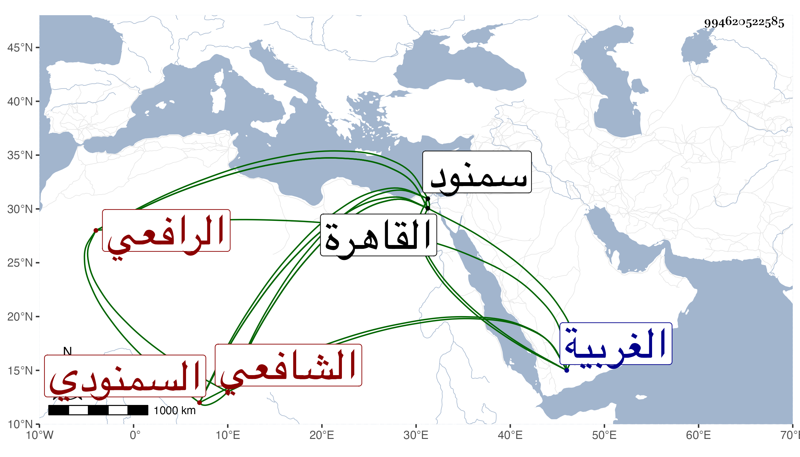

0902Sakhawi.DawLamic.ITO20230111-ara1.EIS1600.994620522585
Biography ID: 994620522585
502
عيسى بن محمد بن عيسى بن عمر بن يانس بتحتانية ثم نون مكسورة ثم مهملة بن صالح النفائي بفتح النون والفاء الممدودة السمنودي الرافعي الشافعي . قرأ القرآن واشتغل في القاهرة على العز بن جماعة وغيره ، ولقيه البقاعي في سنة ثمان وثلاثين بسمنود ووصفه بالوقار والعقل والفضل وسعة الدائرة وأنه هو وأهل بيته مشايخ معروفون في بلاد الغربية وأعمال القاهرة معتقدون مشار إليهم مذكورون بالكرامات والأحوال وكتب عنه غرائب ومما كتبه عنه وكأنه لغيره في جده :
| لما حثثت من المطايا عيسا | هطلت دموعي من فراقي عيسى |
| ذاك الذي أحيا المكارم بعدما | درس الفلاة والزمان دروسا في أبيات |
